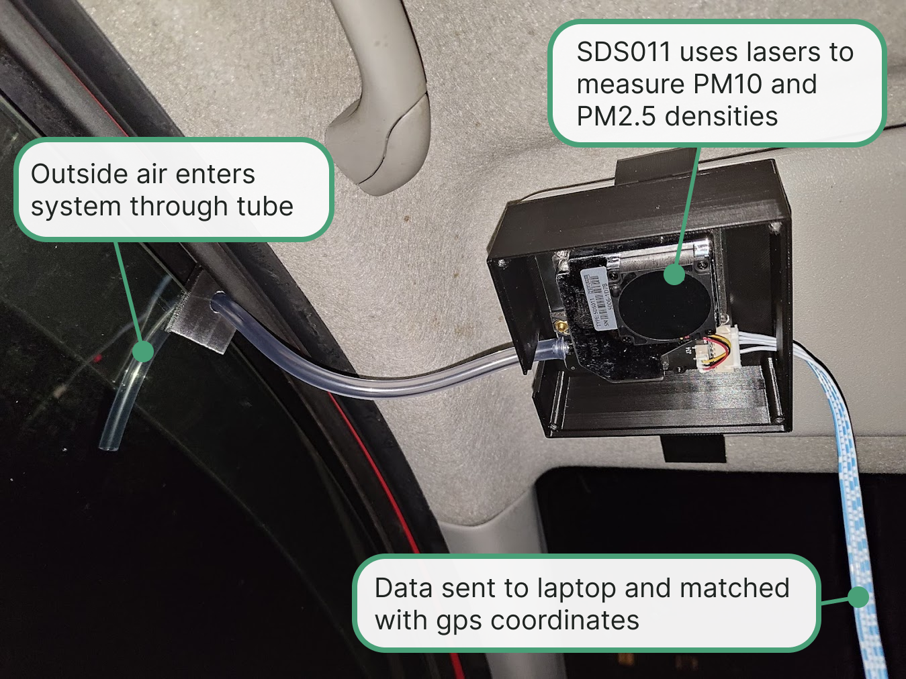

New Zealand lacks a high-resolution air quality monitoring system. Existing fixed stations are too sparse to capture street-level pollution variations, making it hard for councils to identify and act on specific hotspots, and for individuals to make informed decisions about their environments, especially the 1 in 5 New Zealanders with respiratory conditions.
Interactive map showing Auckland's limited air quality monitoring stations.
Our system addresses the lack of localised air quality data by mounting a network of low-cost sensors onto Auckland's bus fleet. This leverages bus routes to collect dynamic, street-level pollution data without the expense of installing new monitoring stations.
GIS data of all Auckland bus routes demonstrating potential network coverage
To validate the technical feasibility of our idea, we developed a car-mounted air quality monitor using an SDS011 sensor. A laptop connected over USB records timestamped measurements to a log file while a separate phone records timestamped GPS data to another log file.
Proof-of-concept prototype used in initial testing.
Prototype was tested by driving around the city using roads shared by bus routes where possible. The air quality and GPS log files were then matched using MATLAB and displayed below with Plotly.
We're a team of final-year mechanical and mechatronics engineering students with strong skills in product development, electronics, design, and project management.
Coco has experience as a digital intern and in academic research, bringing expertise in software integration and circuit design.
Shaun has worked in R&D and systems engineering, with strengths in electrical systems and hands-on prototyping, and serves as our R&D Lead.
Camilla leads mechanical design, with industry experience in CAD, simulation, and manufacturing.
Akshima brings expertise from internships and student leadership roles in project management, finance, and stakeholder coordination, managing the project's timeline and business case.